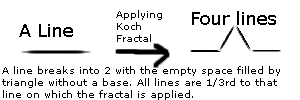
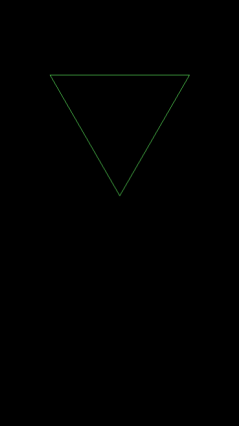
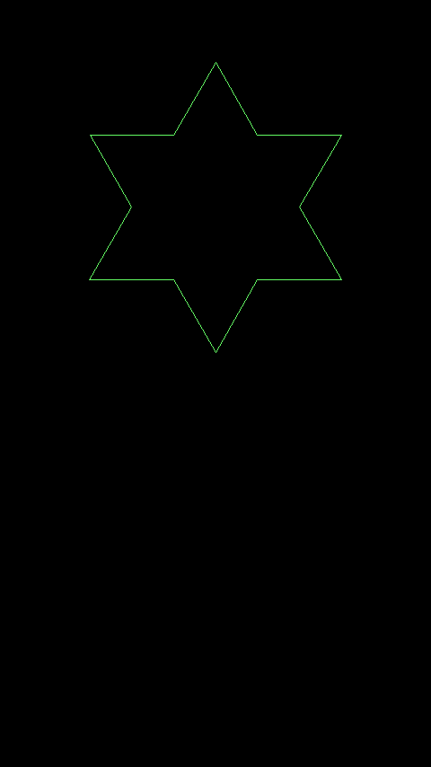
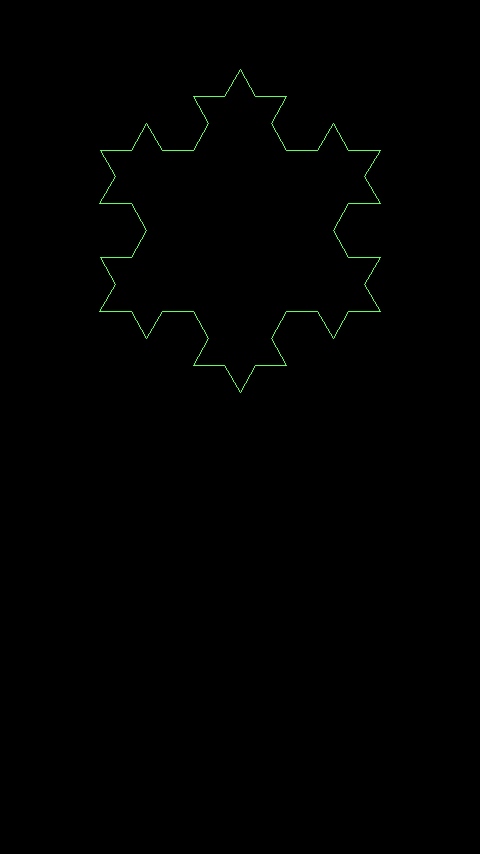

What is Koch Fractal?
Koch Fractal is a simple algorithm which produces snowflake from a triangle. The concept behind this, is to break a line into two while leaving one third of the space between them where we fit two more lines forming an equilateral triangle without the base. This process is, then repeated to all lines again and again!

The Implementation
First thing, you should know basics of C++ as well as a bit of SDL2 and basic trigonometry to understand it.
We are going to use
SDL2 to have some graphics. We will only use some of its basic primitive drawing methods for drawing lines. So, we are going to include only SDL2 header. We are also going to include list.h to have a list of lines.
1
2
|
#include <list>
#include <SDL2/SDL.h> // or #include <SDL.h>
| |
Now, we need an
SDL_Window*, an
SDL_Renderer* and an
SDL_Event instance to have the image on screen and to handle events.
1
2
3
4
5
6
7
|
SDL_Window* window = NULL;
SDL_Renderer* renderer = NULL;
bool quit = false;
SDL_Event in;
const int SCR_W = 640; // Width of the window
const int SCR_H = 480; // Height of the window
| |
Previously, I said that there will be a list of lines. That means, we need to define line as a struct or a class. You can use struct as well but I am using class for that.
1
2
3
4
5
6
7
8
9
10
11
12
13
14
15
16
17
18
19
20
21
22
23
24
25
|
class Line
{
public:
double x, y, length, angle; // Members
Line(double x, double y, double length, double angle) : x(x), y(y), length(length), angle(angle) {}
double getX2() // Getting the second x coordinate based on the angle and length
{
return x+cos(angle*(M_PI/180.0))*length;
}
double getY2() // Getting the second y coordinate based on the angle and length
{
return y+sin(angle*(M_PI/180.0))*length;
}
void draw()
{
SDL_SetRenderDrawColor(renderer, 100,255,100,255); // Setting the color of the line
SDL_RenderDrawLine(renderer,x,y, getX2(),getY2()); // Drawing the line
SDL_SetRenderDrawColor(renderer, 0,0,0,255); // Resetting the color
}
};
| |
Now, we need to have a list of lines.
|
std::list<Line*> lines; //Note that we do not take Line, we take Line*
| |
Finally, the Koch algorithm implementation, all in one function which takes list of Line* as a parameter.
1
2
3
4
5
6
7
8
9
10
11
12
13
14
15
16
17
18
19
20
21
22
23
24
25
26
27
28
29
30
31
32
33
34
35
36
37
38
39
40
41
42
43
44
45
46
47
48
49
50
51
52
53
|
//Worth noting: It's a heavy function!
void kochFractal( std::list<Line*> & lines )
{
std::list<Line*> newLines; //For getting new Line*(s)
std::list<Line*> delLines; //For getting Line*(s) to be deleted
for(auto itr = lines.begin(); itr != lines.end(); itr++)
{
double x_l1 = (*itr)->x;
double y_l1 = (*itr)->y;
double len_l1 = (*itr)->length/3;
double ang_l1 = (*itr)->angle;
double x_l2 = (*itr)->x + (cos((*itr)->angle*(M_PI/180.0))*(*itr)->length/1.5);
double y_l2 = (*itr)->y + (sin((*itr)->angle*(M_PI/180.0))*(*itr)->length/1.5);
double len_l2 = (*itr)->length/3;
double ang_l2 = (*itr)->angle;
double x_l3 = (*itr)->x + (cos((*itr)->angle*(M_PI/180.0))*(*itr)->length/3.0);
double y_l3 = (*itr)->y + (sin((*itr)->angle*(M_PI/180.0))*(*itr)->length/3.0);
double len_l3 = (*itr)->length/3.0;
double ang_l3 = (*itr)->angle - 300.0;
double x_l4 = (*itr)->x + (cos((*itr)->angle*(M_PI/180.0))*((*itr)->length/1.5));
double y_l4 = (*itr)->y + (sin((*itr)->angle*(M_PI/180.0))*((*itr)->length/1.5));
double len_l4 = (*itr)->length/3.0;
double ang_l4 = (*itr)->angle - 240.0;
//All four lines properties are setted above!
//Fixing bug - Changing Triangle Forming Orientation
x_l4 = x_l4 + cos(ang_l4*(M_PI/180.0))*len_l4;
y_l4 = y_l4 + sin(ang_l4*(M_PI/180.0))*len_l4;
ang_l4 -= 180.0;
//Each line forms four new lines...
newLines.push_back( new Line( x_l1, y_l1, len_l1, ang_l1 ) );
newLines.push_back( new Line( x_l2, y_l2, len_l2, ang_l2 ) );
newLines.push_back( new Line( x_l3, y_l3, len_l3, ang_l3 ) );
newLines.push_back( new Line( x_l4, y_l4, len_l4, ang_l4 ) );
//...for deleting itself!
delLines.push_back( (*itr) );
}
for(auto itr = newLines.begin(); itr != newLines.end(); itr++)
lines.push_back( (*itr) ); //Adding new Line*(s)
for(auto itr = delLines.begin(); itr != delLines.end(); itr++)
{
lines.remove( (*itr) ); //Deleting new Line*(s)
delete (*itr);
}
}
| |
Phew! A big implementation really! Now, time for the action in the
int main():
1
2
3
4
5
6
7
8
9
10
11
12
13
14
15
16
17
18
19
20
21
22
23
24
25
26
27
28
29
30
31
32
33
34
35
36
37
38
39
40
41
42
43
44
45
46
47
48
49
50
51
52
53
|
int main( int argc, char** args )
{
SDL_Init(SDL_INIT_EVERYTHING); //Initializing SDL2
window = SDL_CreateWindow( "Koch Fractal", SDL_WINDOWPOS_UNDEFINED,
SDL_WINDOWPOS_UNDEFINED, SCR_W, SCR_H, SDL_WINDOW_SHOWN ); //Creating window
renderer = SDL_CreateRenderer( window, -1, SDL_RENDERER_ACCELERATED ); //Creating renderer
SDL_SetRenderDrawColor(renderer,0,0,0,255); //Setting default screen color
//Horizontal line
//lines.push_back( new Line(SCR_W-10,SCR_H/2.0, SCR_W-20,180.0) );
//Vertical line
//lines.push_back( new Line(SCR_W/1.5,10, SCR_H-20,90.0) );
//Equilateral Triangle for forming Koch Snowflake
lines.push_back( new Line( SCR_W-100, 150, SCR_W-200, 180.0) );
lines.push_back( new Line( 100, 150, SCR_W-200, 60.0) );
Line* lineS = new Line( SCR_W-100, 150, SCR_W-200, 120.0);
lineS->x += cos(lineS->angle *(M_PI/180.0))*lineS->length;
lineS->y += sin(lineS->angle *(M_PI/180.0))*lineS->length;
lineS->angle -= 180.0;
lines.push_back( lineS );
while(!quit) //The loop
{
while(SDL_PollEvent(&in)) //Polling Events
{
if(in.type == SDL_QUIT)
quit = true;
}
SDL_RenderClear(renderer); //Clearing renderer
for(auto itr = lines.begin(); itr != lines.end(); itr++)
(*itr)->draw(); //Drawing all lines
SDL_RenderPresent(renderer); //Updating screen
SDL_Delay(2500); //Delay to show each iteration
kochFractal(lines); //Applying Koch Fractal
}
for(auto itr = lines.begin(); itr != lines.end(); itr++)
delete (*itr); //Deleting all lines at the end of a program
SDL_DestroyRenderer(renderer);
SDL_DestroyWindow(window);
SDL_Quit(); //Clearing all SDL resources
return 0;
}
| |
The Results!
Following images show the result. It was executed on a mobile device using C4Droid, a program for running C++ programs on Android.
I hope that this excites you for more programming, algorithms and fractals. For more such things, visit my blog
bacprogramming.wordpress.com.


